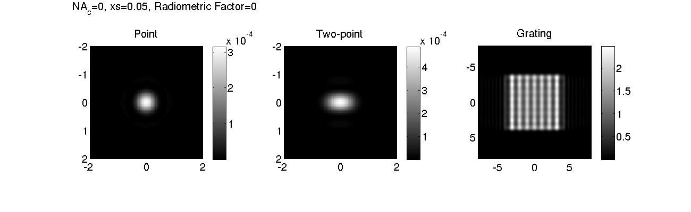
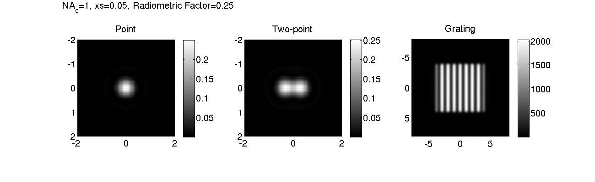

Contents
Evaluate radiometric consistency of simulations with microlith.
Compare images of a point, pairs of points, and a 1D grating with varying degrees of coherence to check that relative intensities scale with the numerical aperture of illumination and the specimen transmission.
Image of a point generated by microlith has unity peak amplitude when imaged with a brightfield microscope having circular aperture imaging and illumination apertures of 1 and the pixel-size of 100nm.
Copyright (2010-2013) Shalin Mehta, www.mshalin.com License: GPL v3 or later.
Define the simulation grid and parameters of imaging system.
L=8; % Support over which we want to calculate the image. xs=0.05; % Sampling rate in the specimen plane. % To avoid aliasing, specimen should be sampled at 0.2 lambda/NA % atleast. % Sampling rate in the specimen plane determines extent in frequency % domain. xs=0.1 should suffice as the transfer function fits into the square with % side 2 or (1+S)/sqrt(2) and sampling at 0.1 defines support of [-5 5]. v=-L:xs:L; % Transeverse extent of simulation. u=0; % Analytical expression for two point image is available only in focus. params.NAo=1; params.lambda=1; params.nImm=1; params.nEmbb=1; [xx, yy]=meshgrid(v); twopoint=(abs(abs(xx)-0.3)<10*eps ... & abs(yy)<10*eps ); point=(abs(xx)< 10*eps & abs(yy)< 10*eps); grating=0.5*(1+cos(2*pi*xx)); grating=grating.*double(abs(xx)<=4 & abs(yy)<=4); % Limit the size of grating to avoid edge-artifacts. NAc=[0 0.5 1]; pointImg=zeros([size(point) length(NAc)]); twopointImg=zeros([size(point) length(NAc)]); gratingImg=zeros([size(point) length(NAc)]); % Instantiate the microscope. brightfield=microlith(v,u);
Compute images.
for idx=1:numel(NAc) params.NAc=NAc(idx); computesys(brightfield,'Brightfield',params); pointImg(:,:,idx)=computeimage(brightfield,point,'CPU'); twopointImg(:,:,idx)=computeimage(brightfield,twopoint,'CPU'); gratingImg(:,:,idx)=computeimage(brightfield,grating,'CPU'); end
Compare the images.
figure(1); colormap gray; set(1,'Color','white','Position',[100 100 1300 400],'defaultaxesfontsize',16); for idx=1:numel(NAc) clf; subplot(131); imagesc(v,v,pointImg(:,:,idx)); axis equal; colorbar; title('Point'); xlim([-2 2]); ylim([-2 2]); subplot(132); imagesc(v,v,twopointImg(:,:,idx)); axis equal; colorbar; title('Two-point'); xlim([-2 2]); ylim([-2 2]); subplot(133); imagesc(v,v,gratingImg(:,:,idx)); axis equal; colorbar; title('Grating'); axis tight; RadiometricFactor=params.NAo^2*NAc(idx)^2*(xs/0.1)^2; annotation('textbox',[0.1 0.9 0.8 0.1],'String',... ['NA_c=' num2str(NAc(idx)) ', xs=' num2str(xs) ', Radiometric Factor=' num2str(RadiometricFactor) ],'FontSize',16,'Edgecolor','none'); pause(1); snapnow; end 